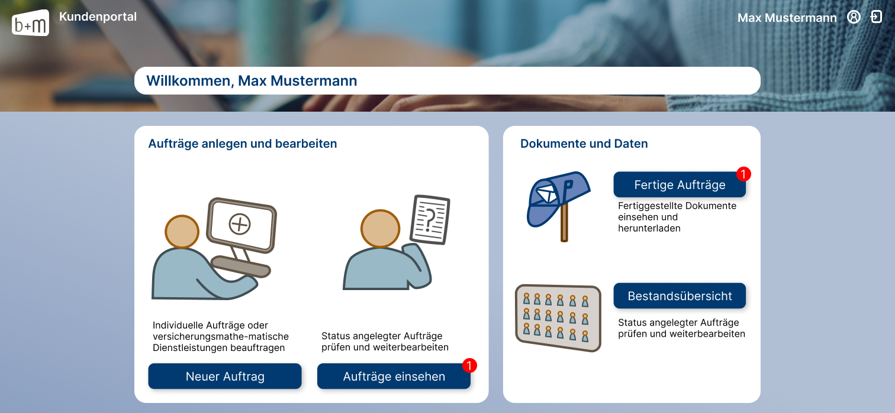

bAV-Kundenportal
Im Rahmen meines Pflichtpraktikums bei der b+m Informatik AG hatte ich die Gelegenheit, das Demo-Kundenportal des bAV Managers zu modernisieren. Das Ziel war es, nicht nur ein ansprechendes neues Design zu entwickeln, sondern auch sicherzustellen, dass es barrierefrei und benutzerfreundlich ist.
Die Projektphasen umfassten die Anforderungsanalyse, bei der ich durch Interviews und Personas ein tiefes Verständnis für die Nutzerbedürfnisse gewann. Dies mündete in einem Papierprototyp und einem Wireframe-Click-Dummy, der durch intensives Feedback iterativ verbessert wurde.
Die Umsetzung erfolgte in Figma und wurde in enger Zusammenarbeit mit dem Teamleiter und anderen Kollegen abgestimmt. Besonderes Augenmerk lag dabei auf der Berücksichtigung von Barrierefreiheit. Die Gestaltung wurde schließlich in das bestehende Kundenportal implementiert, wobei die Einarbeitung in React und TypeScript eine neue Herausforderung darstellte. Während des Praktikums konnte ich nicht nur meine Kenntnisse in Softwareentwicklung vertiefen, sondern auch Einblicke in die Marketingabteilung gewinnen, wo ich an verschiedenen Designprojekten arbeitete. Die erzielten Fortschritte wurden positiv aufgenommen, und ich freue mich, das Projekt als Minijobber weiterführen zu können.
Für einen detaillierten Einblick in das Projekt und den Prototypen des neuen Designs können Sie hier den Prototypen ansehen. Aufgrund von Datenschutzbestimmungen kann das vollständige, gecodete Projekt leider nicht geteilt werden.
Dieses Projekt hat nicht nur meine technischen Fähigkeiten erweitert, sondern auch gezeigt, wie das im Studium erworbene Wissen in der Praxis angewendet werden kann. Es war eine wertvolle Erfahrung, nicht nur für meine berufliche Entwicklung, sondern auch für das Verständnis, wie Design und Technologie in einem realen Unternehmensumfeld zusammenkommen.